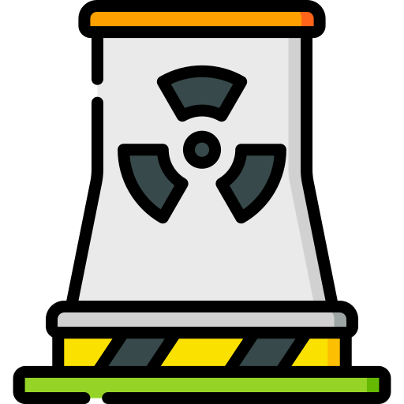
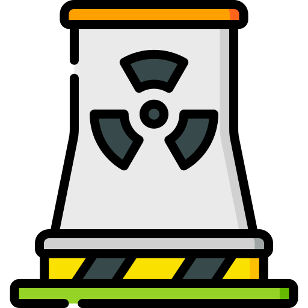

|  |  |
|
| 0 | 0 | 0 |
| Change Display: | Number of Plants Under Construction | Percentage of Plants Still Active |
Our 98 commercial reactors supply 19.31% of our country's energy and produce 807 Terawatt Hours of energy every year. That's enough to supply over 70 million households with a year of energy!
The first nuclear power plant was build in 1958 after President Eisenhower gave his well-known Atoms for Peace speech and the industry has continued to grow ever since.
The 1970's saw a growth of the industry as the environmental movement was formed and people saw the advantage of nuclear power in reducing air pollution. However, in 1979, the Three Island Accident caused a radiation leak which lead to the closure of over a dozen nuclear power plants.
There was a revival of interest in nuclear power in the 2000s, with talk of a "nuclear renaissance", supported particularly by the Nuclear Power 2010 Program. Right now there are currently 2 plants under construction.
|  | |
|
| 0 | 0 | 0 |
| Change Display: | Number of Plants Under Construction | Percentage of Plants Still Active |